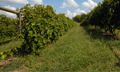

Ya en 1960 Pedro García, hijo y nieto de viticultores, había construido una bodega Y
empezaba a ampliar los viñedos familiares. Posteriormente, en 1975, adquiere sus primeras
viñas en el paraje de Los Vientos
Durante los siguientes años y hasta los principios de los 80 con la adquisión de la primera
línea de embotellado, Pedro no cesa en su empeño por la modernización y la calidad.
Incorporación familiar

A inicios de los 90, ya incorporados sus tres hijos, Antonio, Carlos y David al equipo de La
bodega, comienza la andadura internacional, con presencia en la ferias de mayor
relevancia en el sector, viajes de prospección, presentaciones y catas. Es este el momento
de los primeros reconocimientos y distinciones tanto a nivel nacional como internacional. La
immersión en nuevos mercados provoca la necesidad de un mayor desarrollo tecnológico de las
instalaciones en pro de la calidad y una mayor competividad
Equipos de Maceración
Se sucede paulatinamente la adquisión de los equipos de maceración, estabilización y
vinificación más modernos en el mercado:
Maceración carbónica con mesa de selección.
Maceradores tradicionales con el control de temperatura.
Depósitos maceradores "Sistemas Ganymede".
Depósitos medianos y pequeños que permitan vinificaciones selectivas.
Y se mejora gradualmente las líneas de producción con las más prácticos sistemas de
embotellado, etiquetado y envasado.